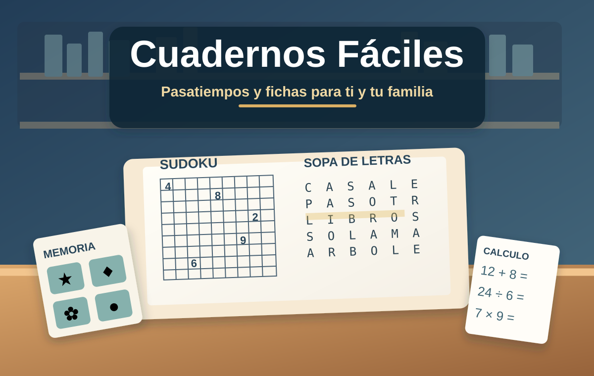

Cuadernos Fáciles
Pasatiempos, fichas y cuadernos imprimibles para ti y para toda la familia.
Encuentra actividades para adultos, jóvenes y familias: sopas de letras, sudokus, ejercicios de memoria, cálculo, lenguaje y propuestas educativas para niños.

¿Qué puedes hacer?
🧩 Buscar pasatiempos
Filtra actividades por tema y dificultad, guarda favoritos y descubre nuevas fichas.
🖨️ Descargar e imprimir
Guarda fichas PDF y prepara actividades en papel A4.
📘 Crear tu cuaderno
Elige fichas, ordénalas y genera un PDF con portada e índice.
🧠 Memoria y atención
Ejercicios de observación, vocabulario y razonamiento para distintas edades.
✏️ Material educativo
Actividades para familias que quieren preparar ejercicios para niños.
🔒 Uso sin cuenta
No se requieren registros, pagos ni envío de estadísticas personales.
Descargar Cuadernos Fáciles para Windows
La edición pública es independiente del programa administrador con el que se preparan y publican las actividades.
La descarga se habilitará cuando el archivo público 3.0.0 esté alojado y verificado en GitHub Releases.
Antes de instalar: la aplicación de Windows no está firmada digitalmente. Si Windows muestra una advertencia, confirma primero que la descarga procede de la Biblioteca. No se distribuye el administrador de publicaciones.
Esta ficha está publicada como presentación del programa. La descarga para visitantes permanece bloqueada hasta que el archivo de la versión pública sea cargado y comprobado. La aplicación para móviles no está disponible todavía como APK.